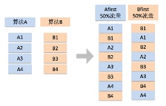
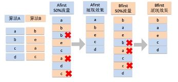

Interleaving介绍
“每个男人生命中总有两个女人, 一个是红玫瑰，一个是白玫瑰。娶了红玫瑰，红玫瑰终将褪成墙上的一抹蚊子血，而白玫瑰则成了床前的一抹明月光。娶了白玫瑰，白玫瑰成了衣服上的一粒饭粒子，而红玫瑰则永远成了心口上的朱砂痣”
——张爱玲
搜索引擎系统一直追求将更好的结果展现给用户，从而提升用户体验。而与之对应的，我们也需要某种方法去评估其效果。而在搜索引擎评估系统中，似乎也有这么一对白玫瑰和红玫瑰——AB实验和interleaving实验。
1.AB-test的缺点#
AB实验（AB-Test），作为一种传统的评估及检测方式由来已久，由于其实验方法简单，适用场景多，因此在很多领域都有着广泛的应用（比如药物效果所进行的双盲AB测试）。搜索引擎评估之初，当开发出一个新的产品，对线上展现效果或者卡片样式做变化的时候，一个最自然的想法就是进行AB实验。实现方法是从线上随机抽取两份流量，一部分的人（A组）体验到新版效果，一部分人（B组）体验旧版的效果。通过对比两部分的指标情况，来判断新版本的整体效果。
然而AB实验并不是完美的，随着搜索引擎技术发展，人们在评估中也渐渐地发现了一些问题。她像白玫瑰，有时太过沉静和安稳。
1.实验不够敏感#
对于一个检索系统来说，很多时候，程序员们都是在搞各种排序算法，期望让更好更相关的结果排在前面，比如把原来展现在第3位置较差的结果调到了第4位，把第4位的好结果放到第3位。这种微小的变化，通过AB实验的统计性指标，很难度量出排序的变化所带来的体验影响。
2.低频无法准确分析#
随着搜索技术发展，各类中高频的需求满足情况逐步完善，用户体验持续提升。搜索竞品之间的争夺，更多的集中在对于冷门需求（通常为频次低，Query较长）的效果体验差异上。 在这种场景下，由于A组和B组两部分很难出现相同的查询请求（Query无法在A/B共现），因此，AB实验对于这部分的评估就非常困难，且无法提供有效的用户Case进行产品分析。
3. 实验周期一般较长#
此时，我们非常期待一个能够对用户行为有着更敏锐反馈的实验方式，期望用户在一次检索下既能看到新版又同时能看到旧版的效果，来进行更加直接的PK，也不用担心冷门Query无法复现的问题。像红玫瑰，热烈奔放，即使微弱的排序变化，也能够迅速捕捉，敏锐反映。
2.interleaving实验介绍#
Interleaving实验，从直观上来说，就是可以满足让用户”同时”看到新版和旧版两种效果的实验方式。那么，究竟要怎样设计才能让用户“同时”看到两种效果呢？下面就来简单的介绍一下interleaving的实验原理。
基本原理#
首先我们把新版的效果叫做策略组，记为A，旧版的效果叫做基线组，记为B。一个比较自然的想法，就是通过某种方式将策略和基线的效果merge到一起，这样用户就能“同时”看到两种效果。

图1、Interleaving图示
如图1示例，当用户检索一个Query的时候，算法A和算法B会分别有一套排序策略。展现结果分别是(A1, A2, ……)，(B1, B2, ……)。然后按照A优先或者B优先的方式，两边按顺序各自取一条结果，依次拼凑在一起。从而构成右侧的排序结果，这种方式称为balanced interleaving抽样。
算法实践#
上面是Interleaving的基本原理，在具体实践中，会有一些更加细节的考虑点。
- 重复结果问题

图2、Interleaving去重示例
在大多数情况下，策略结果并不会像图1所示变化那么剧烈（两侧结果完全不同），更多的策略往往是在已知的首页结果上进行更细化的排序，例如图2所示的例子。由于从用户感知层面来看，相同的结果只能够占据一个展示位置，因此要对重复结果进行消除。最终展现给用户的是无重复的结果。消除的原则是：相同结果仅保留在前面的一条。
此外，如何界定”相同结果”，也需要充分考虑。例如，如果仅仅采用URL做为结果的区分标准，可能会将一些URL相同，但展现丰富程度不同的结果去掉（例如某些特型卡片） 。此时，需要从全面评估角度进行更详细的设计。
- 均匀抽样问题
搜索中，用户的点击是有位置偏差的，越靠前的结果越容易被点击。即在A优先的前提下，用户更倾向于点击A的结果，这就造成了指标的偏差。因此在抽取流量时候，需要保证A优先和B优先的比例是一致的。这样从统计上可以将偏差打平。因此，理想情况下，为了保证度量的准确性，需要保证流量中有50%的是A优先，50%的是B优先。
- 其它问题
除了上述基本问题外，从评估角度出发，需要考察各种可能导致评价误差的因素（例如展现样式和高度偏差、位置偏差等），这里不再赘述
实验效果度量#
传统AB实验，评估更多的是用户的整体体验，主要通过点击率、有点比例，长点率，换query率等基础指标，来刻画用户体验的变化。而interleaving指标设计更多的体现在对于单次检索的评价上，且更多的应用在排序实验中。
基于单次检索的评价，在用户”同时”看到两侧结果的场景下，更多的体现在对于用户行为（点击、停留时长）的分配问题上。假设策略将一条基线没有的好结果提上来，用户点击后获得满足离开，这个点击会很自然的分配给策略方；当策略将一条基线已有的好结果提升位置展现，用户点击满足离开后，这时需要各分配一些分数给策略和基线方；当一次搜索是多次点击的情况下，如何分配和判断会变的更加复杂。
一般的，需要衡量的体验维度包括：
- 感知相关性
用户在排序感知上（包括飘红、摘要等展现要素）的差别，如上描述，这个可以通过点击的结果分配在策略或基线哪边更靠前来度量。
-
真实相关性
真实相关性也就是用用户点后，在结果页的真实满足程度，比如可以通过用户的停留时间来衡量。 -
其它方向度量
除了基础相关性度量外，由于Interleaving同时具有两侧的结果，我们还可以进行更多维度（时效性、权威性等）的度量。基于指标的具体计算这里不再展开。
3 Interleaving与AB实验方式区别#
作为两种不同的实验方式，AB和interleaving实验有不同的应用场景和优缺点。主要来说有这么几个方面：
-
指标敏感度
AB实验敏感度低一些，适合改动较大的策略，比如展现样式的变化，新增了一张阿拉丁卡片等；而interleaving实验敏感度比较高，主要应用在rank 排序类的实验中。 -
所需流量
AB实验因为敏感度低，一般所需流量较大(比如4%-6%)，而interleaving实验因为相对敏感，很小的流量就能出信号(比如0.25%)。 -
实验周期
AB实验因为抽的是两份不同的流量，在真正做实验之前，需要去验证两份流量是否天然存在偏差。所以一般需要空转3天，然后实验5天。而interleaving实验因为天然的就是同一个用户看到两种效果，因此不需要空转，一般实验3天左右即可。 -
指标设计
AB指标设计简单，直观且相对易于理解； 而interleaving实验，因为本身的实验机制就比较复杂，指标设计也困难许多。 -
Case抽取
分析实验需要定位到具体的case级别，interleaving实验非常方便定位；而AB实验因为两边结果都不一定能复现，而且是不同人的行为，可比性较差。
4 小结#
总的来说，不管是interleaving实验还是AB实验，都是一种实验方式，他们有各自的优缺点和试用范围，都需要根据具体的产品或者策略类型去灵活的选择；不管是白玫瑰还是红玫瑰，都需要自己去选择合适的，从而能够有效的衡量出搜索引擎的排序和展现效果，不断提升用户的线上体验。
当然interleaving实验的具体度量方式和指标设计比较复杂，这次只是对其实验方式的一个简单介绍，没有具体展开。如果你想要接着了解她，可以期待我们下次的分享呦。
5. 专业版#
指标体系
指标阈值设计案例-指标阈值-rank搜索